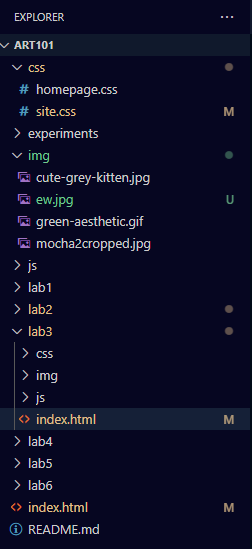
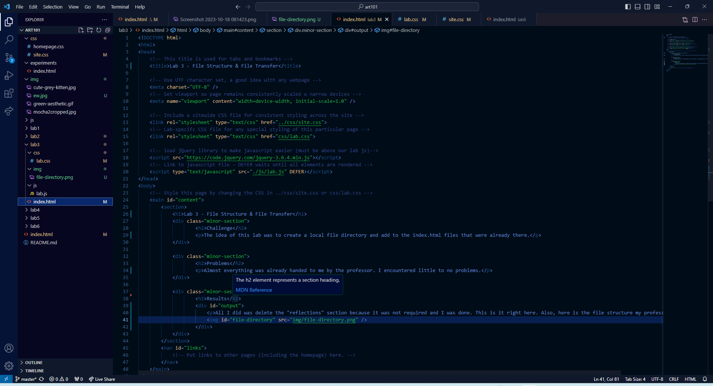
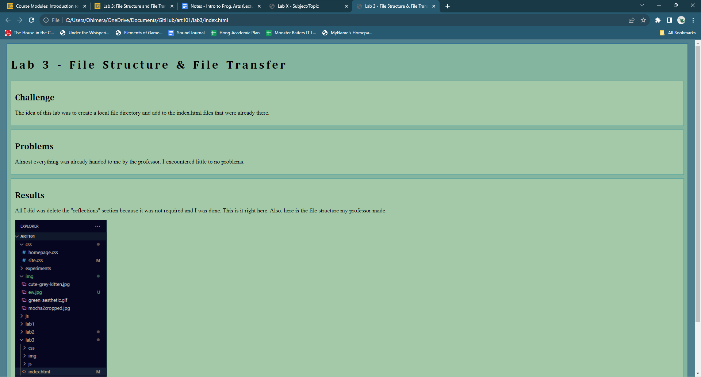

Lab 3 - File Structure & File Transfer
Challenge
The idea of this lab was to create a local file directory and add to the index.html files that were already there.
Problems
Almost everything was already handed to me by the professor. I encountered little to no problems.
Results
All I did was delete the "reflections" section because it was not required and I was done. This is it right here. Also, here is the file structure my professor made:
Here is also a screenshot of the coding in html for this lab:
Annnd here is a screenshot of my browser:
